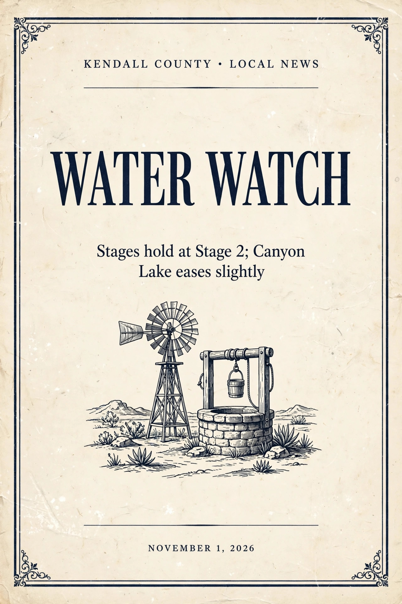

Water Watch: Kendall County water status, November 2026
Kendall County stays at Stage 2 drought restrictions, Boerne stays at Stage 2, and Canyon Lake eased to 907.24 feet and 96.2 percent full.

Kendall County stays at Stage 2 drought restrictions, Boerne stays at Stage 2, and Canyon Lake eased to 907.24 feet and 96.2 percent full.
November on the Hill Country Mile opens with Fall Diva Night on November 5 and the Boerne Handmade Market on November 6-7, followed by Pink Friday on November 20 and Dickens on Main on November 27-28.
October's five most engaged Wire stories on Facebook, led by the Bravo reality series set in Boerne, with 159 reactions, comments, and shares combined.
Geneva School of Boerne won the regional volleyball title Saturday in San Marcos and advances to the TAPPS state tournament, while Boerne ISD playoff action continues Tuesday.
On November 1, 1877, the public free school of Boerne commenced at the schoolhouse, after decades of private lessons and a statewide fight over tax-supported schools.
Christine Crowley steps down as executive director of the Boerne Community Theatre on December 31, after nine years in the role and 25 years with the theatre.